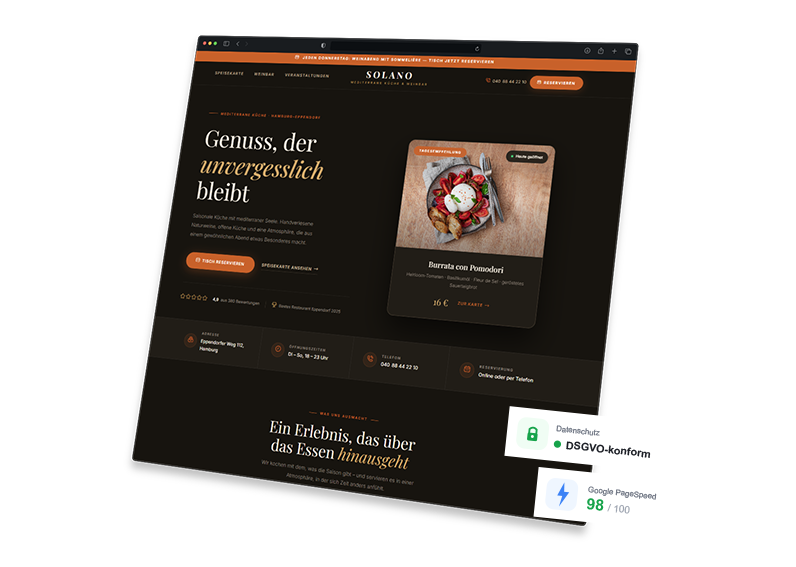

Hungrige Gäste suchen ihr nächstes Restaurant heute zuerst online. Mit einer überzeugenden Restaurant-Website gewinnst Du Gäste, bevor sie einen Fuß durch Deine Tür setzen.

Das sind die häufigsten Probleme von Restaurants und Gastronomiebetrieben ohne professionelle Online-Präsenz
Ohne optimierte Restaurant-Website tauchst Du in lokalen Suchergebnissen kaum auf – und hungrige Gäste in Deiner Nähe landen beim nächsten Konkurrenten.
Tischanfragen kommen ausschließlich per Anruf – oft mitten im Abendservice. Ohne Online-Reservierung kostet das unnötig Zeit und Du verpasst Buchungen außerhalb der Öffnungszeiten.
Gäste möchten vor dem Besuch wissen, was sie erwartet. Ohne aktuelle Online-Speisekarte verlierst Du Gäste, die schnell entscheiden wollen – besonders auf dem Smartphone.
Über 80 % der Restaurant-Suchen finden mobil statt. Eine nicht mobiloptimierte Website schreckt ab und kostet direkt Gäste und Umsatz.
Ich baue Websites, die Dein Restaurant appetitlich präsentieren, Gäste anziehen und Deinen Betrieb erleichtern – individuell statt von der Stange.
Wenn jemand "Restaurant München" oder "Italiener Berlin Mitte" sucht, soll Dein Betrieb ganz oben erscheinen. Ich optimiere Deine Website gezielt für lokale Suchanfragen, damit hungrige Gäste aus Deiner Umgebung Dich finden.
Gäste reservieren ihren Tisch direkt auf Deiner Website – auch nachts um 23 Uhr. Ich integriere ein unkompliziertes Reservierungsformular oder -system, das zu Deinem Betrieb passt und Dir keine Anrufe mehr verpasst.
Eine modern gestaltete Online-Speisekarte mit Fotos, Beschreibungen, Preisen und Allergenkennzeichnung. Gäste können vor dem Besuch stöbern – das erhöht Vorfreude und Buchungswahrscheinlichkeit spürbar.
Dein Restaurant lebt von Stimmung und Genuss. Mit einer professionellen Bildergalerie und überzeugenden Texten vermittle ich genau das Gefühl, das Gäste erleben werden – und motiviert sie zur Buchung.
Geburtstage, Firmenfeiern, Hochzeiten: Ich präsentiere Dein Angebot für besondere Anlässe gezielt und mit eigenen Seiten – so generierst Du planbare Umsätze durch Eventbuchungen und Catering-Anfragen.
Ob Smartphone, Tablet oder Desktop – Deine Restaurant-Website lädt blitzschnell, sieht appetitlich aus und führt Gäste klar zur nächsten Handlung: Tisch reservieren, Karte ansehen oder anrufen.
Egal ob kleines Café oder etabliertes Restaurant – ich baue Websites für alle Bereiche der Gastronomie.
Ich lerne Deinen Betrieb kennen: Was machst Du besonders gut, wen möchtest Du ansprechen und welche Ziele verfolgst Du? Das dauert ca. 15 Minuten – kostenlos und unverbindlich.
Du bekommst ein klares Konzept und ein faires Angebot. Keine versteckten Kosten, kein Fachjargon – nur eine ehrliche Einschätzung, wie ich Dein Restaurant digital überzeugend präsentiere.
Ich baue Deine Restaurant-Website, Du schaust Dir Zwischenstände an und gibst Feedback. Einfache Seiten sind oft schon in 1–2 Wochen fertig und online.
Deine Website geht online. Ich bleibe erreichbar – für Anpassungen, Speisekarten-Updates und Fragen. Du wirst nicht allein gelassen.
Kostenlos & unverbindlich
Ich erstelle Dir eine kostenlose Demo-Website – individuell für Dein Restaurant und Deine Küche. Kein Risiko, keine Verpflichtung.
Demo jetzt anfordern →Eine gute Restaurant-Website ist nicht nur Visitenkarte – sie ist Dein stärkster Verkäufer, der nie Feierabend macht
Eine lokal optimierte Website sorgt dafür, dass Gäste in Deiner Nähe Dich finden – bevor sie ein anderes Restaurant wählen. So füllt sich Dein Restaurant mit Gästen, die gezielt zu Dir kommen.
Die meisten Gäste haben ihr Restaurant schon ausgesucht, bevor sie das Haus verlassen. Eine appetitliche, professionelle Website macht den Unterschied zwischen "vielleicht" und "da gehen wir hin".
Mit Online-Reservierung und einer aktuellen Speisekarte auf der Website entlastest Du Dein Team – weniger Anrufe für Standardfragen, mehr Zeit für Deine Gäste im Lokal.
Viele Gastronomiebetriebe sind online schlecht aufgestellt. Wer jetzt in eine starke Online-Präsenz investiert, sichert sich einen deutlichen Vorteil gegenüber der Konkurrenz in der Nähe.
Alles, was Du vor dem Start wissen möchtest
Lass uns in einem kurzen, kostenlosen Gespräch herausfinden, wie ich Dein Restaurant digital überzeugend positioniere. Unverbindlich, unkompliziert und auf Augenhöhe.
Jetzt Gespräch vereinbaren